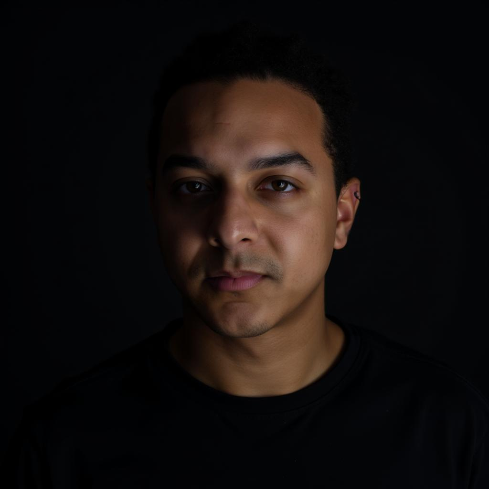

About
I am a Research Associate and Ph.D. Candidate at the Hamburg University of Technology, working at the Institute for Data Science Foundations.
My research investigates how intelligent agents acquire knowledge, make decisions, and perceive their surroundings. For this, I currently employ methods of model-based reinforcement learning.
Contact: frank.roeder [at] tuhh.de

Research Experience
- 04/2022 - Present: Ph.D. Student at the Institute for Data Science Foundations, Hamburg University of Technology.
- 01/2021 - 03/2022: Ph.D. Student at the Knowledge Technology Group, University of Hamburg.
- 10/2019 - 09/2020: Student Assistant at the Department of Neurology, University Medical Centre Hamburg-Eppendorf.
Teaching
- Tutor, Mathematics II (SS 2025), Institute for Mathematics
- Tutor, Mathematics I (WS 2024/25), Institute for Mathematics
- Tutor, Introduction to Reinforcement Learning Seminar (SS 2024), Institute for Data Science Foundations
- Tutor, Introduction to Reinforcement Learning Seminar (SS 2023), Institute for Data Science Foundations
- Supervisor, Neural Networks Seminar (SS 2022), Knowledge Technology Group
- Supervisor, Bio-Inspired Artificial Intelligence Seminar (WS 2021/22), Knowledge Technology Group
- Supervisor, Neural Networks Seminar (SS 2021), Knowledge Technology Group
- Supervisor, Bio-Inspired Artificial Intelligence Seminar (WS 2020/21), Knowledge Technology Group
Activities & News
- February 2025: Attending the Guided Self-Organization Conference (GSO-2025) in Tübingen.
- February 2025: Submitted my PhD dissertation.
Tools and Projects
Music
Industry Experience as Working Student
- 05/2018 - 08/2019: Business Intelligence / Developer at Peaks & Pies
- 07/2017 - 04/2018: Fullstack Software Developer at Bellmorgen Vorsorge GmbH
- 04/2017 - 07/2017: Software Developer at the Deutsche Gesellschaft für Privatpatienten